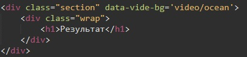

Заходим на сайт VIDE
Скачиваем архив, из которого нам нужна папка dist. Из нее мы копируем библиотеку jquery.vide.min и помещаем ее в папку js нашего проекта. Ну и конечно же не забываем подключить внизу нашего сайта
Далее нам понадобится папка Video. В этой папке должны находится четыре элемента:
Как получить наше видео в форматах Ogg и WEBM? гуглим любой конвертер и все!
Где можно качать видео. вот ЗДЕСЬ
Теперь как же установить видео фон с помощью библиотеки VIDE. Очень просто. Блоку с секцией мы просто добавляем атрибут - data-vide-bg='путь к видео без расширения'
Вот как это выглядело у меня:
